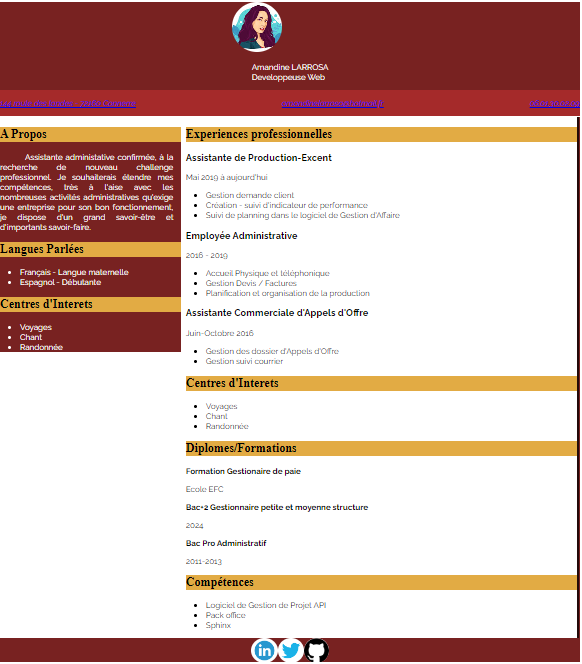

C’est un document dans
lequel on explique son parcours scolaire et professionnel.
On l’écrit généralement pour
répondre à une offre d’emploi.
Il doit faire état des compétences en rapport avec le poste visé.
Il montre vos
compétences en développement pures mais aussi votre capacité à prendre en compte des contraintes de design, d’accessibilité, de référencement ou encore d’expérience utilisateur.
Un
recruteur préfèrera souvent un candidat polyvalent, ouvert d’esprit et qui ne se limite pas à sa
propre discipline.
